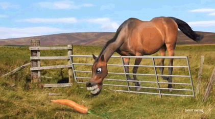
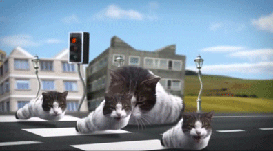
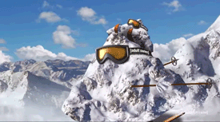
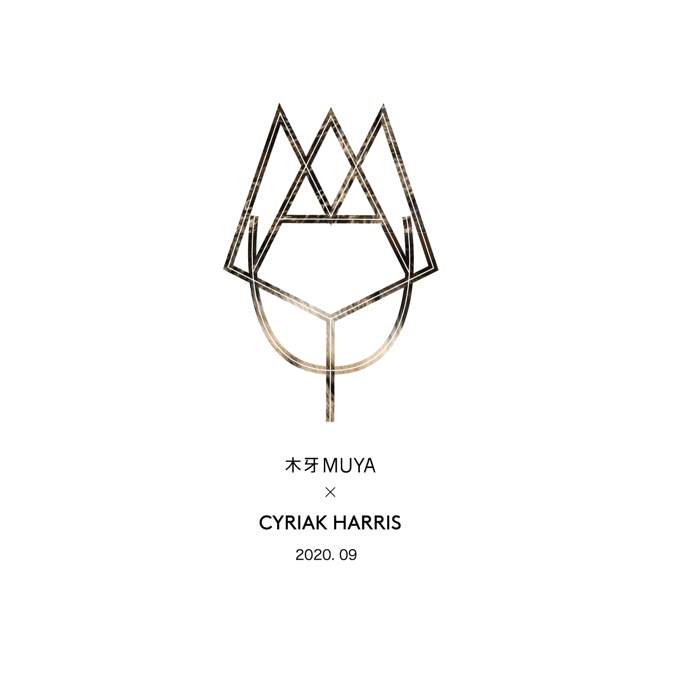

动物世界怪诞频道 | Cyriak Harris
欢迎来到木牙Make Unique Young Arts，让我们一起来探索怪异美学的奇特魅力！
生活中充斥着许许多多不合乎常理的事情，慢慢的事情堆积多了，开始形成了一个特有的词汇来形容这一现象—怪诞。怪诞理论发起于西方。什么是怪诞呢？没有一个直观的说法，但说到怪诞，大部分人脑海里会出现词汇丑陋，怪异，奇特，反常，滑稽，诡异，可怕，搞笑，可爱，恶搞。。这些词汇代表了我们身体本能对于反常规，突破界限事物的直观感受，虽然诡异却有着独特又吸引人的魅力。
Life is full of so many irrational things, as long as many similar things overlapped, and form a unique word to describe this phenomenon - Grotesque. Theory of grotesque originated in the West. What is grotesque? There's no intuitive way to explain it, but when it comes to the grotesque, most of the words in our minds that are ugly, weird, strange, freaky, funny, scary, cute, spoof. These words represent our body's intuitive perception of things that are unconventional and boundary-breaking, weird but unique and appealing.
而怪诞艺术则是在全方面角度上反常态的刺激着观众的五感六觉。打破日常，带领我们进入另一个世界。解放被禁锢已久的内心世界。从另一角度打开我们的大脑，重新获取看待事情的眼睛。今天我们有幸邀请到了Cyriak Harris来到木牙MUYA。让我们一起来看他眼中被无数次剪辑，重复，倒叙。充斥着反常无厘头的可爱世界～
On the other hand, grotesque art stimulates the audience's five senses in an abnormal way. This breaks the routine and takes us to another world. This releases our internal world that has been self-locked for a long time. It opens up our mind from an unique angle and renews a way how we see this world. Today we are honored to have Cyriak Harris in MUYA. Let’s visit his cute world filled with many collages, repeated, flashbacks and abnormal irrational stuff ~
Cyriak Harris
一名英国艺术家，他最著名的作品是利用照片和视频蒙太奇制作的超现实动画，他于2004年开始在互联网上传播。此后，他以自由漫画家的身份开始了自己的职业生涯，制作商业广告、电视节目和音乐视频，在油管上拥有大约170万的订阅者。他目前住在林肯郡，没有特殊的原因。
Cyriak Harris
A British artist best known for his surreal animations using photo and video montage, which he began spreading on the internet in 2004. He has since built a career as a freelance animator, working on commercials, TV shows, and music videos, and has a YouTube following of over a million subscribers. He currently lives in Lincolnshire for no apparent reason.



➤ 木牙MUYA: Cyriak的商业工作跨越了广告、电视和音乐视频等不同领域。我们很好奇您是如何在自我风格和商业作品之间找到平衡的呢？
Cyriak’s commercial work spans such diverse realms as advertising, television, and music videos. I am wondering how Cyriak can find and keep a balance between personal style and commercial work?
Cyriak Harris: 我因为我的个人风格而流行起来，所以当人们让我做视频时，他们通常希望我做自己的事情。在商业项目中，我试图弱化更多怪诞的元素，一些客户喜欢我疯狂地使用可怕的变形肉体怪物，但其他人对照片/视频蒙太奇的艺术外观更感兴趣。我让他们指出他们特别喜欢我的哪些视频，然后我就以此为基础得出我的观点。
I became popular for my style, so when people ask me to make videos they usually want me to do my own thing. With commercial projects I try to tone down the more grotesque elements, some clients prefer me to go crazy with horrible mutating flesh monsters but others are more interested in the artistic look of the photo/video montage.I ask them to point out which of my videos they particularly like and then I base my ideas on that.
➤ 木牙MUYA: Cyriak的作品非常的有趣并且都是特别让人惊奇的，这些吸引人的动图和视频大多数都是围绕动物的，动物对于你来说是否是特殊的存在？或者说，Cyriak是否是在用动物映射什么？
Cyriak's works are very interesting and amazing. Most of these fascinating GIfs and videos revolve around animals. Do animals have a special existence for you? Or is Cyriak mapping something with animals?
Cyriak Harris: 我开始加入动物元素的原因很简单，它们不是人，我不需要征得他们的同意。然后我开始发现动物比人更有趣。他们就像活着的卡通人物，你可以把人类的属性投射到他们身上，却依然能感受到他们身上的喜怒哀乐，而他们却浑然不觉。动物对待生活非常认真，所以当你把它们置于荒谬的情境中时，它们会变得更加有趣。
I started using animals for the simple reason that unlike people I didn’t need to ask their permission. However, I since discovered that animals are just funnier than people. They are like living cartoon characters, you can project human attributes onto them but also feel the comical tragedy of their existence which they are oblivious to. Animals take life very seriously, which makes it more amusing when you put them in ridiculous situations.

➤ 木牙MUYA: 当Cyriak处理音乐和视频剪辑的时候，对于Cyriak而言叙事性是怎样的呢？Cyriak是如何理解音乐的叙事方式和视频的叙事方式之间的关联性？
When Cyriak edit and manage music and video, what is the narrative for Cyriak? How does Cyriak think about the relationship of the narrative between music and video?
Cyriak Harris: 对我来说，音乐讲述着一个故事。当我在制作音乐视频时，音乐会带我踏上一段旅程，而歌曲本身就像一个故事板。它提供了视觉效果的基调，剪辑的节奏，甚至是动作的时机。一首好的歌曲也会有一个叙事弧，开头，中间和结尾。故事本身来自我个人的想象，但视频将由音乐塑造。这就是我很难为我不喜欢的音乐制作视频的原因。而且，如果我不喜欢一首歌，我也不会在几个星期里每天都听。
For me, music tells a story. When I am making a music video, the music is taking me on a journey and the song itself becomes like a storyboard. It provides the mood of the visuals, the pace of the editing and even the timing of the movements. A good song will also have a narrative arc, a beginning, middle and end. The story itself will come from my own imagination, but it will be shaped by the music. This is why I find it difficult to make music videos for songs I don’t like. Also if I don’t like a song I won’t want to hear it every day for several weeks.
➤ 木牙MUYA: 在Cyriak的视频中出现反复，折叠，置换等常用叙事方式，这些影像的剪辑方式有哪种映射和传达概念吗？
Repetition, folding, displacement, and other common narrative and montage modes appear in Cyriak's videos. Are there any mapping and conveying concepts in the editing mode of those videos?
Cyriak Harris: 我所做的事情背后的想法对我来说是潜意识的，我没有深入思考为什么我要做这些东西，我只是做一些看起来有趣的东西。我的很多动画都是基于科学原理，比如几何、镶嵌、变异、进化、无限和混沌。 我想我只是喜欢把现实变成积木，我可以用它来创造另一种现实。还有一个反复出现的主题是永无止境。事物不断地构建，但以一种分形的方式，不断地变化，但看起来总是相似的，或者在时间上循环。 时间循环就像一个镶嵌式的模式，它的结束与开始完全吻合。这就像一个拼图，所有的碎片都是自己拼出来的。
The ideas behind what I do are kind of subconscious to me, I don’t think that deeply about why I am making these things, I just make whatever looks interesting. A lot of my animations are based on scientific principles like geometry, tessellation, mutation, evolution, infinity and chaos. I think I just enjoy turning reality into building blocks I can use to create alternative realities. There is also a recurring theme of endlessness. Things build and build, but in a fractal way, changing but always seeming similar, or looping in time. Time loops are like a tessellating pattern where the end perfectly fits the beginning. It is like a puzzle where all the pieces create themselves.

➤ 木牙MUYA:对于你自己的作品中的怪，Cyraik是如何理解的呢？是否自己也会觉得自己的作品特别的独特，怪诞，有趣？除了自己之外，在你眼里谁又是那个怪诞，独特，有趣的视频制作艺术家？为什么？
How does Cyriak understand the weird in your works? Do you find your work unique, bizarre, and interesting? Who else do you think is the weird, unique, funny video making artist? Why?
Cyriak Harris:在我看来，古怪只是新奇的另一种说法。我很容易厌倦，总是想看看新的东西，或者用不同的方式看旧的东西。把熟悉的东西放在错误的地方，或者举止怪异，都会让人感到不安。在我看来，我所做的一切都不如我们生活的这个世界奇怪。我们没有注意到，因为我们沉浸在其中，但我们的宇宙是一个疯狂的地方。 我只是举着一面镜子让人们看到，我想这可能就是为什么我的作品能引起人们的共鸣。它说的东西已经深埋在他们的脑海里了。 我从不认为其他艺术家是怪异的或者独特的，所有的艺术都是与之前的有关的，即使是我自己的作品也是已经完成的延续。我们只是在给这个正在进行的故事中加入我们自己的声音。
Weirdness is just another word for novelty I suppose. I get bored easily and always want to see new things, or see old things in different ways. This can be disturbing for people, to see familiar things in the wrong place or acting strangely. The way I see it, nothing I make is as strange as the world we are living in. We don’t notice because we are immersed in it, but our universe is a crazy place. I’m just holding up a mirror to allow people to see that, I think that might be why my stuff resonates with people. It is saying something that is already buried deep in their minds. I never think of other artists as being weird or unique, all art is related to what has come before it, even my own stuff is a continuation of what has already been done. We just add our own voice to the ongoing story.

➤ 木牙MUYA: 对比起作品，Cyriak的音乐也同样的有趣。除了用基本的音乐编辑器之外，你还有应用哪些真实的乐器或者用具来模拟出你想要的声音吗？为什么会想要自己制作视频的配乐？
Cyriak's music is just as interesting as your videos. In addition to using the basic music editor, are there any real instruments or appliances you use to simulate the sound you want? Why would you want to make your own soundtrack for your video?
Cyriak Harris: 我做音乐的时间比做动画要长，但我仍然不知道音乐是如何工作的。我从来没有学过乐器，也没有学过怎么读和写音符。这是另一种讲故事的方式，这也是我在视频中使用它的原因。 有些人真的不喜欢我的音乐，但我觉得还好。有很多我不喜欢的流行音乐，在某种程度上我用我自己的音乐向人们展示一个另类的音乐世界，就像我的动画向人们展示一个另类的视觉世界一样。我想对一些人来说，音乐就像视觉一样令人不安。
I’ve been making music longer than I’ve been making animations, but I still don’t know anything about how music works. I never learned any musical instruments or how to read and write the notes. It’s another way of telling a story, which is why I end up using it for my videos. Some people really don’t like my music, but I’m ok with that. There is a lot of popular music I don’t like, in a way I am using my own music to show people an alternative musical world, just like my animations are showing people an alternative visual world. I guess music can be just as disturbing as visuals for some people.
➤ 木牙MUYA: 在Cyriak的网页中，在联系方式页面，Cyriak 列举了一些常见的问题。十分有趣的是，在里面包括了许多拒绝的内容。例如：Would you be interested in collaborating on a music video? /您有兴趣合作制作音乐视频吗？这是否意味着比起共同合作，Cyriak更喜欢做独立的任务？对于因为这些问题可能错失的机会你又是怎么理解的？
On Cyriak's web page, on the contact information page, Cyriak lists some common questions. Interestingly enough, there is a lot of rejection in it. E.g. “Would you be interested in collaborating on a music video?-What do you mean? ” Does this mean that Cyriak prefers doing independent rather than working together? How do you understand the opportunities that may have been missed because of these answers?
Cyriak Harris: 我收到很多要求我制作音乐视频的请求，所以我试着过滤掉那些不打算付钱给我的。我也是一个控制狂，喜欢自己工作，所以我对与其他艺术家合作不感兴趣。这对我来说是非常有限的，因为任何比音乐视频更有野心的东西都可能需要其他艺术家的帮助。 举个例子，我很想制作一部长片动画，但是如果没有帮助的话，可能要花几年的时间。
I get a lot of requests to make music videos, so I try to filter out the ones that aren’t going to pay me. I am also a massive control-freak and prefer working on my own, so I’m not interested in collaborating with other artists. This is very limiting for me, because anything more ambitious than a music video is probably going to need help from other artists. For example I’d love to make a feature length animation, but without help it would probably take me years.
➤ 木牙MUYA: Cyriak本科是什么专业的呢？如果与视频无关，Cyraik是如何学习视频剪裁的？对于初次制作视频的新手们有什么推荐的软件？又有哪些制作视频的小众软件是你觉得有趣并且推荐一定要尝试的？
What was Cyriak's undergraduate major? If it has nothing to do with video, how does Cyraik learn about video tailoring? What software do you recommend for first-time video novices? What niche software for making videos do you find interesting and recommend people try?
Cyriak Harris:我获得了动画专业的学位，但我们没有学习如何使用电脑。那是在20世纪90年代，我们还在使用纸和灯箱。毕业后的几年里，我忘记了动画，直到我发现了电脑和Photoshop。第一个动图是我用Photoshop做的，里面有非常原始的动画工具。 然后我尝试使用Flash，但它在动画图像上有点笨拙，所以在2006年我被推荐使用After Effects，从那时起我就一直在使用它。
我从视频教程和大量的实验中学到了如何使用它。我可能没有正确地使用它，但它似乎在最后却产生了不错的效果。我不确定这是不是最好的动画软件，我有时觉得我强迫软件去做一些它设计不适合的事情，但是我不知道其他的动画工具。 我想初学者仍然可以尝试在Photoshop中制作动画，但肯定有更好的东西。Blender是免费的，可以做After Effects可以做的大部分事情，但它主要是用于3d动画，所以对初学者来说会很复杂。
I did a degree in animation, but we didn’t learn how to use computers. That was back in the 1990s, we were still using paper and light-boxes. After I graduated I forgot about animation for several years, until I discovered computers and Photoshop. The first gifs I made using Photoshop, which has very primitive animation tools. Then I tried using Flash, but it was a bit clumsy for animating photos, so I was recommended After Effects in 2006, and I’ve been using that ever since.
I learned how to use it from video tutorials, and from a lot of experimentation. I’m probably not using it properly, but it seems to work out ok in the end. I’m not sure it is the best animation software, I sometimes feel like I am forcing the software to do things it wasn’t designed for, but I don’t know any other animation tools. I guess beginners can still try making animations in Photoshop, but there must be better things out there. Blender is free, and can do most of what After Effects can do, but its primarily for 3d animation, so it will be quite complicated for beginners.

木牙微信订阅号